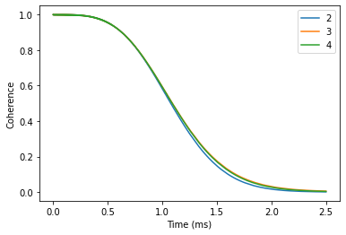
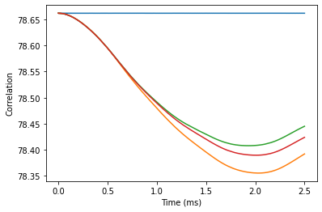
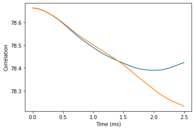
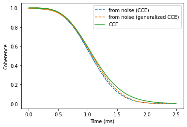

Correlation function
In this tutorial we will compute the coherence function of the NV Center in diamond and then reproduce it from the correlation function of the noise.
The correlation function \(C(t)\) of the effective magnetic field (noise) along the \(z\)-axis can be defined as follows: \begin{equation} C(t) = \left\langle \beta_z(t)\beta_z(0) \right\rangle \end{equation}
With \(\beta_z\) given as:
\begin{equation} \beta_z(t) = U^{\dagger}(t) \left( \sum_{\{I\}}{A_{zz} I_z} \right) U(t) \end{equation}
Where \(U(t)\) is time propagator.
Within the CCE formalism, the correlation function is computed as:
\begin{equation} C(t) = \sum_{\{i\}} {\tilde C_{\{i\}}(t)} + \sum_{\{ij\}} {\tilde C_{\{ij\}}(t)}\ + \ ... \end{equation}
With contributions computed as:
\begin{equation} \tilde C_{\nu}(t) = C_{\nu}(t) - \sum_{\nu' \subset\ \nu} {\tilde C_{\nu'}(t)} \end{equation}
[1]:
import numpy as np
import matplotlib.pyplot as plt
import pandas as pd
import sys
import pycce as pc
import ase
seed = 42055
np.set_printoptions(suppress=True, precision=5)
Generate nuclear spin bath
Building a BathArray of nuclear spins from the ase.Atoms object.
[12]:
from ase.build import bulk
# Generate unitcell from ase
diamond = bulk('C', 'diamond', cubic=True)
diamond = pc.bath.BathCell.from_ase(diamond)
# Add types of isotopes
diamond.add_isotopes(('13C', 0.011))
# set z direction of the defect
diamond.zdir = [1, 1, 1]
# Add the defect. remove and add atoms at the positions (in cell coordinates)
atoms = diamond.gen_supercell(200, remove=[('C', [0., 0, 0]),
('C', [0.5, 0.5, 0.5])],
add=('14N', [0.5, 0.5, 0.5]),
seed=seed)
Next, we define all of the parameters of the simulation. We are interested in the very specific regime, when all nearby nuclear spins are removed. To achieve this goal we define an inner = 20 parameter, and remove all nuclear spins within this radius.
[3]:
position = np.array([0, 0, 0])
inner = 20
smallatoms = atoms[atoms.dist(position) >= inner]
parameters = dict(
order=2, # CCE order
r_bath=60, # Size of the bath in A
r_dipole=6, # Cutoff of pairwise clusters in A
position=position, # Position of central Spin
alpha=[0, 0, 1], # 0 qubit state
beta=[0, 1, 0], # 1 qubit state
magnetic_field = 500, # magnetic field along z-axis
pulses=1 # N pulses in CPMG sequence
) # Qubit levels
ts = np.linspace(0, 2.5, 1001) # Time points in ms
Coherence calculations
Next, we set up Simulator objects and check convergence with respect to the CCE order.
[4]:
calc = pc.Simulator(spin=1, bath=smallatoms, **parameters)
[5]:
orders = [2, 3, 4]
coh = {}
for o in orders:
calc.generate_clusters(o)
coh[o] = calc.compute(ts, method='cce', quantity='coherence')
coh = np.abs(pd.DataFrame(coh, index=ts))
coh.index.name = 'Time (ms)'
Visually verify the convergence.
[13]:
coh.plot()
plt.ylabel('Coherence');

Noise calculations
To compute the correlation function of the noise, we call Simulator.compute method and specify quantity = 'noise'.
First we determine convergence of the correlation function with the CCE order.
[14]:
for o in [1, 2, 3, 4]:
calc.generate_clusters(o)
noise = calc.compute(ts, method='cce', quantity='noise')
plt.plot(ts, noise.real, label=o)
plt.xlabel('Time (ms)')
plt.ylabel('Correlation');

The difference between third and fourth order is fairly small, we will use the fourth order for the following calculations. It will take a bit of a time, so you can grab some tea while you wait.
[8]:
calc.generate_clusters(4)
noise = calc.compute(ts, method='cce', quantity='noise')
genoise = calc.compute(ts, method='gcce', quantity='noise', nbstates=0)
Compare the results obtained with CCE and gCCE approaches. Note that they are slighlity different. However, as we will see it does not impact the predicted coherence.
[15]:
plt.plot(ts, noise.real, label='CCE')
plt.plot(ts, genoise.real, label='gCCE')
plt.xlabel('Time (ms)')
plt.ylabel('Correlation');

Assuming that the noise is Gaussian, we can reproduce the coherence from the average phase squared \(\langle\phi^2\rangle\), accumulated by the spin qubit:
\(L(t)=e^{-\langle \phi^2(t) \rangle}\)
The average phase is obtained from the autocorrelation function as:
\(\langle \phi^2(t) \rangle = \int_0^t{d\tau C(\tau) F(\tau)}\)
Where \(F(\tau)\) is the correlation filter function (see Phys. Rev. A 86, 012314 (2012) for details).
PyCCE code already has implemented calculations of the phase in the pycce.filter module:
pycce.filter.gaussian_phase takes three positional arguments:
timespace- time points at which correlation function was computed;corr- noise autocorrelation function;npulses- number of pulses in CPMG sequence.
Here we compute the phase for the Hahn-echo experiment. Note that the implementation of gaussian_phase is not heavily optimized and can take a hot second.
[10]:
import pycce.filter
chis = pycce.filter.gaussian_phase(ts, np.abs(noise), 1)
gchis = pycce.filter.gaussian_phase(ts, np.abs(genoise), 1)
Now compare results from direct calculations of the coherence function, and the one reconstructed from the noise autocorrelation:
[16]:
plt.plot(ts, np.exp(-chis).real, ls='--', label='from noise (CCE)')
plt.plot(ts, np.exp(-gchis).real, ls='--', marker='', label='from noise (generalized CCE)')
plt.plot(ts, coh[4], label='CCE')
plt.legend()
plt.xlabel('Time (ms)')
plt.ylabel('Coherence');
